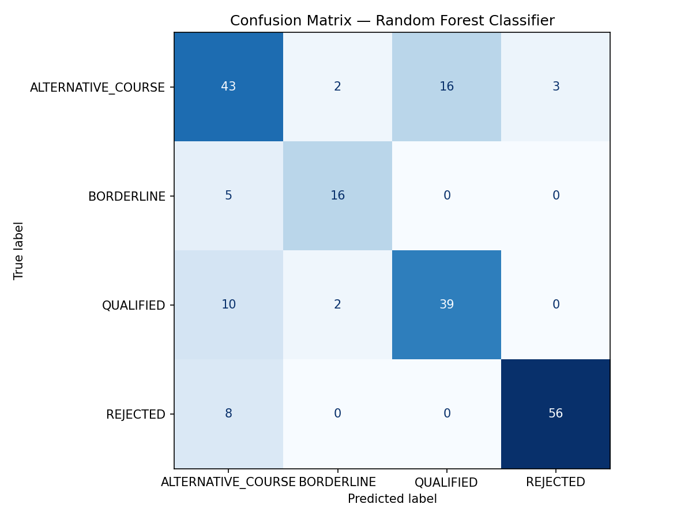
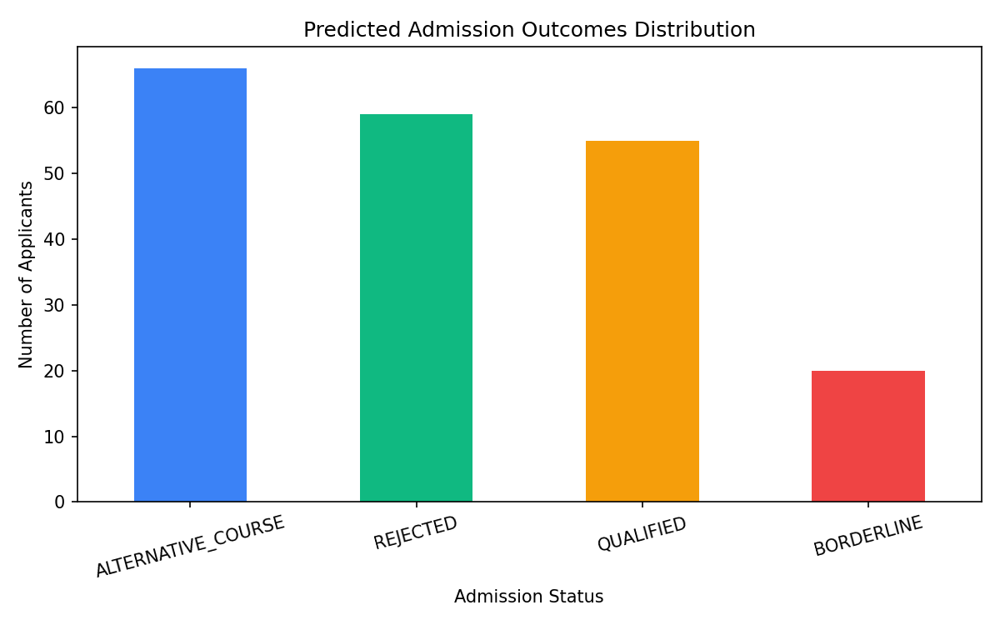

Use the Snipping Tool (Windows Key + Shift + S) to take screenshots of the sections below for your project report.
| applicant_name | jamb_reg_number | utme_score | olevel_math | olevel_english | olevel_subject_1 | olevel_grade_1 | olevel_subject_2 | olevel_grade_2 | olevel_subject_3 | olevel_grade_3 | olevel_avg_score | course_applied | departmental_cutoff | outcome |
|---|---|---|---|---|---|---|---|---|---|---|---|---|---|---|
| Aisha Adeyemi | 202596001338CF | 227 | A1 | B3 | Biology | B2 | Chemistry | C5 | Further Mathematics | C5 | 3.8 | Medicine and Surgery | 280 | BORDERLINE |
| Emmanuel Anyanwu | 202526542351CF | 205 | B2 | C5 | Mathematics | C4 | Economics | B2 | Further Mathematics | C4 | 3.4 | Economics | 190 | QUALIFIED |
| Aisha Adeyemi | 202561849593CF | 232 | A1 | C6 | English Language | C5 | Literature | C6 | Further Mathematics | C5 | 3.4 | Mass Communication | 180 | QUALIFIED |
| Solomon Eze | 202575255341EG | 263 | C5 | C6 | Mathematics | F9 | Physics | D7 | Further Mathematics | D7 | 2.0 | Computer Science | 200 | REJECTED |
| Aisha Bello | 202550305641EG | 201 | C5 | B2 | Mathematics | B3 | Economics | F9 | Further Mathematics | C5 | 2.8 | Economics | 190 | ALTERNATIVE_COURSE |
| Tunde Nwosu | 202542388496HJ | 201 | D7 | B3 | Mathematics | C5 | Fine Art | B3 | Further Mathematics | D7 | 3.0 | Architecture | 200 | REJECTED |
| Amaka Nwosu | 202526916697FG | 265 | B2 | F9 | Biology | C4 | Chemistry | A1 | Further Mathematics | A1 | 3.4 | Nursing Science | 200 | ALTERNATIVE_COURSE |
| Daniel Anyanwu | 202551462704EG | 236 | D7 | A1 | Mathematics | C5 | Economics | C5 | Further Mathematics | C4 | 3.2 | Economics | 190 | ALTERNATIVE_COURSE |
| Oluwaseun Abubakar | 202528809570CF | 193 | D7 | D7 | Mathematics | B3 | Economics | C5 | Further Mathematics | C5 | 2.8 | Economics | 190 | REJECTED |
| Chukwuemeka Adeyemi | 202571822782FG | 228 | D7 | C6 | Biology | B3 | Chemistry | A1 | Further Mathematics | D7 | 3.2 | Nursing Science | 200 | REJECTED |
=== Step 1: Handle Missing Values === Missing values before cleaning: applicant_name 0 jamb_reg_number 0 utme_score 0 ... Shape after cleaning: (1000, 5) === Step 2: Label Encoding === Outcome label encoding: ALTERNATIVE_COURSE -> 0 BORDERLINE -> 1 QUALIFIED -> 2 REJECTED -> 3
=== Rule-Based Admission Screening Results === Applicant Name UTME Course Status Reason -------------------------------------------------------------------------------------------------------------------- Emmanuel Okafor 265 Computer Science QUALIFIED Applicant meets all requirements. Fatima Bello 195 Computer Science BORDERLINE Score is within borderline range. Ngozi Nwosu 310 Medicine and Surgery QUALIFIED Applicant meets all requirements. Daniel Ibrahim 155 Law REJECTED UTME score below institutional cut-off. Blessing Adeleke 172 Accounting ALTERNATIVE_COURSE Does not meet Accounting cut-off.
"""
train_model.py
Hybrid Admission Pre-Screening System — Bingham University
Loads CSV dataset, runs comparative evaluation (Decision Tree, Logistic Regression,
Random Forest), selects the best performer, and serialises with Joblib.
Mirrors the Jupyter Notebook (Model_Training.ipynb) for standalone execution.
"""
import os
import warnings
import pandas as pd
import numpy as np
import matplotlib
matplotlib.use('Agg') # non-interactive backend for saving figures
import matplotlib.pyplot as plt
import joblib
from sklearn.ensemble import RandomForestClassifier
from sklearn.tree import DecisionTreeClassifier
from sklearn.linear_model import LogisticRegression
from sklearn.model_selection import train_test_split
from sklearn.preprocessing import LabelEncoder
from sklearn.metrics import (
accuracy_score, classification_report,
confusion_matrix, ConfusionMatrixDisplay
)
warnings.filterwarnings('ignore')
# ─── 1. Load Dataset ──────────────────────────────────────────────────────────
CSV_PATH = os.path.join(os.path.dirname(__file__), '..', 'data', 'admission_dataset.csv')
print("Loading dataset from:", CSV_PATH)
data = pd.read_csv(CSV_PATH)
print(f"Dataset shape: {data.shape}")
print("\nFirst 5 rows:")
print(data.head())
print("\nOutcome distribution:")
print(data['outcome'].value_counts())
# ─── 2. Data Preprocessing ────────────────────────────────────────────────────
print("\n--- Data Preprocessing ---")
# Drop non-feature columns
drop_cols = ['applicant_name', 'jamb_reg_number',
'olevel_math', 'olevel_english',
'olevel_subject_1', 'olevel_subject_2', 'olevel_subject_3',
'olevel_grade_1', 'olevel_grade_2', 'olevel_grade_3']
data_clean = data.drop(columns=[c for c in drop_cols if c in data.columns])
# Handle missing values
data_clean = data_clean.dropna()
print(f"Shape after dropping missing values: {data_clean.shape}")
# Label encode 'course_applied'
le_course = LabelEncoder()
data_clean['course_applied'] = le_course.fit_transform(data_clean['course_applied'])
# Label encode target
le_outcome = LabelEncoder()
data_clean['outcome_encoded'] = le_outcome.fit_transform(data_clean['outcome'])
print("\nLabel encoding mapping (outcome):")
for cls, idx in zip(le_outcome.classes_, le_outcome.transform(le_outcome.classes_)):
print(f" {cls} -> {idx}")
# ─── 3. Feature Selection & Splitting ────────────────────────────────────────
FEATURES = ['utme_score', 'olevel_avg_score', 'course_applied', 'departmental_cutoff']
X = data_clean[FEATURES]
y = data_clean['outcome_encoded']
X_train, X_test, y_train, y_test = train_test_split(
X, y, test_size=0.2, random_state=42, stratify=y
)
print(f"\nTraining set size : {len(X_train)} samples (80%)")
print(f"Testing set size : {len(X_test)} samples (20%)")
# ─── 4. Comparative Evaluation ───────────────────────────────────────────────
print("\n--- Comparative Model Evaluation ---")
models = {
'Decision Tree': DecisionTreeClassifier(max_depth=6, random_state=42),
'Logistic Regression': LogisticRegression(max_iter=1000, random_state=42),
'Random Forest': RandomForestClassifier(n_estimators=100, max_depth=8, random_state=42),
}
results = {}
for name, model in models.items():
model.fit(X_train, y_train)
preds = model.predict(X_test)
acc = accuracy_score(y_test, preds)
results[name] = acc
print(f" {name:25s} -> Accuracy: {acc:.4f} ({acc*100:.2f}%)")
best_name = max(results, key=results.get)
print(f"\nBest model: {best_name} (Accuracy: {results[best_name]*100:.2f}%)")
# ─── 5. Train Best Model (Random Forest) ─────────────────────────────────────
clf = models[best_name]
# Already fitted above; re-use predictions
y_pred = clf.predict(X_test)
class_names = le_outcome.classes_
print("\n--- Classification Report ---")
print(classification_report(y_test, y_pred, target_names=class_names))
# ─── 6. Confusion Matrix ─────────────────────────────────────────────────────
os.makedirs('models', exist_ok=True)
cm = confusion_matrix(y_test, y_pred)
disp = ConfusionMatrixDisplay(confusion_matrix=cm, display_labels=class_names)
fig, ax = plt.subplots(figsize=(8, 6))
disp.plot(ax=ax, cmap='Blues', colorbar=False)
ax.set_title('Confusion Matrix — Random Forest Classifier')
plt.tight_layout()
plt.savefig('models/confusion_matrix.png', dpi=150)
plt.close()
print("Confusion matrix saved to models/confusion_matrix.png")
# ─── 7. Prediction Outcomes Bar Chart ────────────────────────────────────────
outcome_counts = pd.Series(
le_outcome.inverse_transform(y_pred)
).value_counts()
colors = ['#3b82f6', '#10b981', '#f59e0b', '#ef4444']
fig2, ax2 = plt.subplots(figsize=(8, 5))
outcome_counts.plot(kind='bar', ax=ax2, color=colors[:len(outcome_counts)])
ax2.set_title('Predicted Admission Outcomes Distribution')
ax2.set_xlabel('Admission Status')
ax2.set_ylabel('Number of Applicants')
ax2.tick_params(axis='x', rotation=15)
plt.tight_layout()
plt.savefig('models/prediction_outcomes.png', dpi=150)
plt.close()
print("Bar chart saved to models/prediction_outcomes.png")
# ─── 8. Comparative Accuracy Bar Chart ───────────────────────────────────────
fig3, ax3 = plt.subplots(figsize=(7, 4))
bars = ax3.bar(results.keys(), [v * 100 for v in results.values()],
color=['#94a3b8', '#94a3b8', '#3b82f6'])
ax3.set_ylabel('Accuracy (%)')
ax3.set_title('Comparative Model Evaluation')
ax3.set_ylim(0, 105)
for bar, acc in zip(bars, results.values()):
ax3.text(bar.get_x() + bar.get_width() / 2,
bar.get_height() + 0.5,
f'{acc*100:.1f}%', ha='center', fontsize=10)
plt.tight_layout()
plt.savefig('models/model_comparison.png', dpi=150)
plt.close()
print("Comparison chart saved to models/model_comparison.png")
# ─── 9. Serialise Model with Joblib ──────────────────────────────────────────
model_path = 'models/random_forest_model.joblib'
joblib.dump({'model': clf, 'label_encoder': le_outcome, 'feature_encoder': le_course}, model_path)
print(f"\nModel serialised with Joblib -> {model_path}")
print("\nTraining complete.")
=== Random Forest Model Training ===
Test Accuracy: 0.7700 (77.00%)
=== Classification Report ===
precision recall f1-score support
ALTERNATIVE_COURSE 0.65 0.67 0.66 64
BORDERLINE 0.80 0.76 0.78 21
QUALIFIED 0.71 0.76 0.74 51
REJECTED 0.95 0.88 0.91 64
accuracy 0.77 200


Below is the live data from your MongoDB Database:
Error connecting to MongoDB: localhost:27017: [WinError 10061] No connection could be made because the target machine actively refused it (configured timeouts: socketTimeoutMS: 20000.0ms, connectTimeoutMS: 20000.0ms), Timeout: 30s, Topology Description: